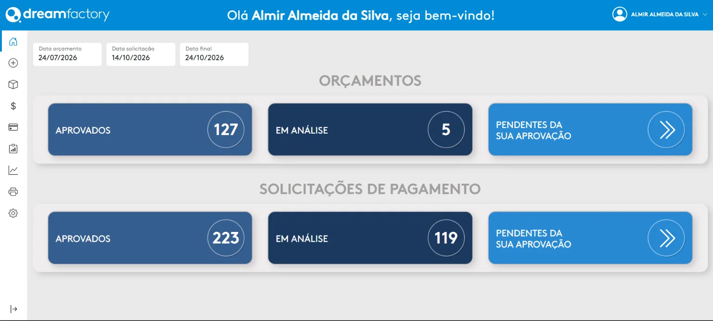
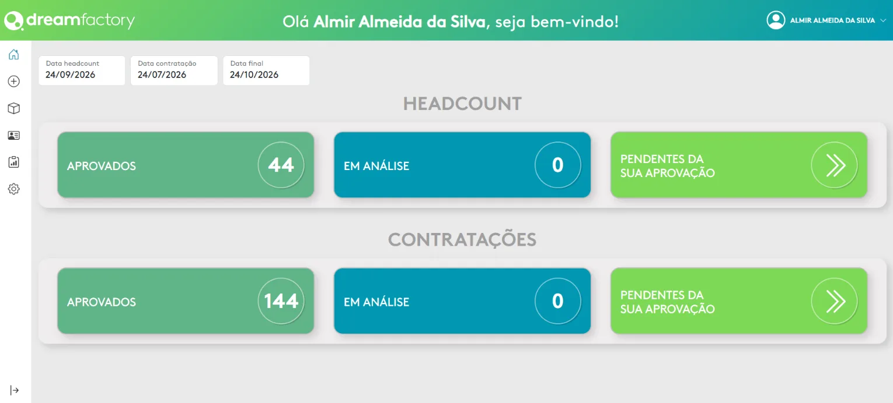
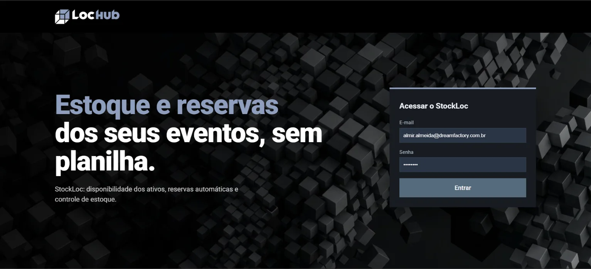
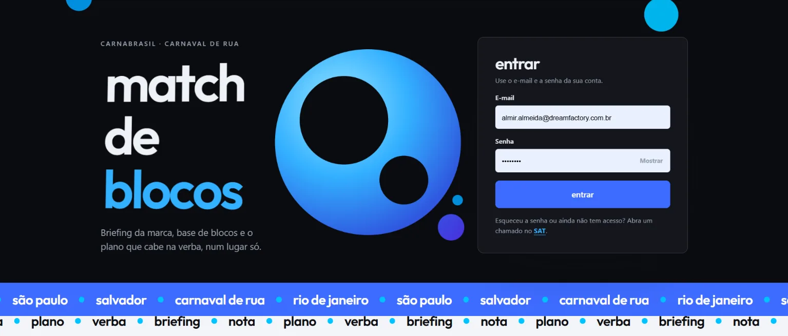
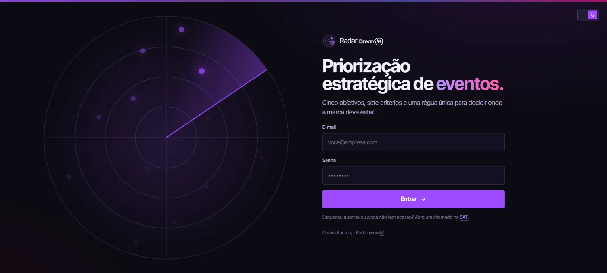

tive uma ideia!
precisamos resolver isso
01
a ideia chega
por um colaborador, ou quando a necessidade aparece.
apresentação da equipe de ti · 2026
sistemas, dados e infraestrutura que sustentam oito plataformas de entretenimento ao vivo — um país inteiro em movimento.
seis passos, da ideia ao ar.
vamos mostrar, passo a passo, como uma ideia vira aplicação aqui dentro: do primeiro rascunho ao sistema no ar, entregue e monitorado.
por um colaborador, ou quando a necessidade aparece.
descrevemos a ideia e já desenhamos as telas no papel.
buscamos nos nossos bancos de código o que já pode ser usado.
import { login, dashboard } from '@df/kit'
export default function App() {
const user = login.useSession()
return <Dashboard user={user} />
}começamos a estruturar a ideia no editor de código.
mvp completamente funcional, entregue em 20 dias.
após o período de testes e ajustes, a aplicação é entregue e monitorada.
o que a gente criou aqui dentro e tem orgulho de mostrar. a cada passada o tambor gira e a aplicação abre ao vivo.
cinco novidades saindo do forno. uma por passada.
o novo site do grupo: marcas, agenda e contatos numa vitrine só.
o novo site da dream experience, com portfólio e cases de brand experience.
os espaços do dream venue, com agenda e contato direto para eventos.
cada etapa da área de performance visível e atualizada em tempo real.
entradas, saídas e alerta de reposição para o facilities.

aprovações financeiras num só painel: orçamentos e solicitações de pagamento, com o que já foi aprovado, o que está em análise e o que aguarda a sua aprovação.

o mesmo fluxo de aprovações aplicado a pessoas: headcount e contratações, do pedido à aprovação final.

estoque e reservas dos eventos, sem planilha: disponibilidade dos ativos, reservas automáticas e controle de estoque.

feito para o carnaval de rua do carnabrasil: briefing da marca, base de blocos e o plano que cabe na verba, num lugar só.

priorização estratégica de eventos: cinco objetivos, sete critérios e uma régua única para decidir onde a marca deve estar.